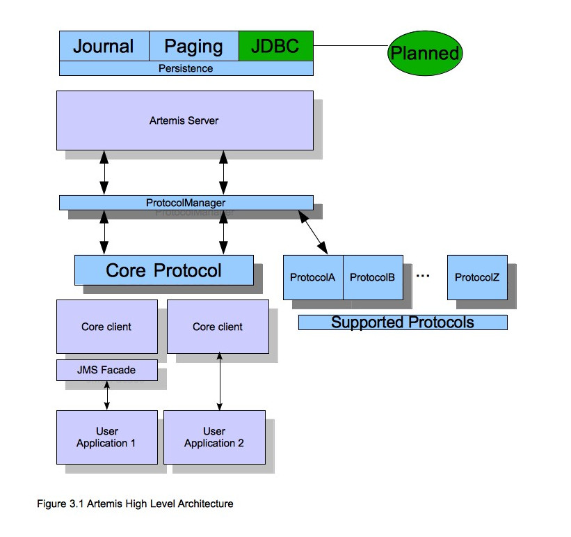
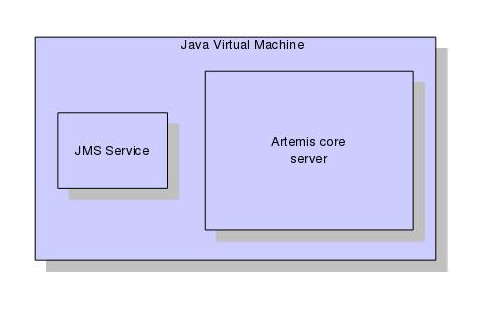
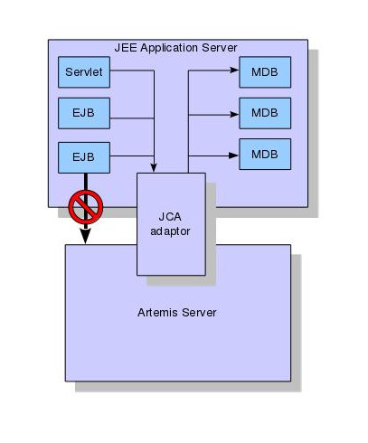

Core Architecture
Apache ActiveMQ Artemis core is designed simply as set of Plain Old Java Objects (POJOs) - we hope you like its clean-cut design.
Each Apache ActiveMQ Artemis server has its own ultra high performance persistent journal, which it uses for message and other persistence.
Using a high performance journal allows outrageous persistence message performance, something not achievable when using a relational database for persistence (although JDBC is still an option if necessary).
Apache ActiveMQ Artemis clients, potentially on different physical machines, interact with the Apache ActiveMQ Artemis broker. Apache ActiveMQ Artemis currently ships three API implementations for messaging at the client side:
Core client API. This is a simple intuitive Java API that is aligned with the Artemis internal Core. Allowing more control of broker objects (e.g direct creation of addresses and queues). The Core API also offers a full set of messaging functionality without some of the complexities of JMS.
JMS 2.0 client API. The standard JMS API is available at the client side. This client is also compliant with the Jakarta Messaging 2.0 specification.
Jakarta Messaging 3.0 client API. This is essentially the same as the JMS 2.0 API. The only difference is the package names use
jakartainsead ofjavax. This difference was introduced due to the move from Oracle's Java EE to Eclipse's Jakarta EE.
Apache ActiveMQ Artemis also provides different protocol implementations on the server so you can use respective clients for these protocols:
- AMQP
- OpenWire
- MQTT
- STOMP
- HornetQ (for use with HornetQ clients).
- Core (Artemis CORE protocol)
JMS semantics are implemented by a JMS facade layer on the client side.
The Apache ActiveMQ Artemis broker does not speak JMS and in fact does not know anything about JMS, it is a protocol agnostic messaging server designed to be used with multiple different protocols.
When a user uses the JMS API on the client side, all JMS interactions are translated into operations on the Apache ActiveMQ Artemis core client API before being transferred over the wire using the core protocol.
The broker always just deals with core API interactions.
A schematic illustrating this relationship is shown in figure 3.1 below:

Figure 3.1 shows two user applications interacting with an Apache ActiveMQ Artemis server. User Application 1 is using the JMS API, while User Application 2 is using the core client API directly.
You can see from the diagram that the JMS API is implemented by a thin facade layer on the client side.
Stand-alone Broker
The normal stand-alone messaging broker configuration comprises a core messaging broker and a number of protocol managers that provide support for the various protocol mentioned earlier.
The stand-alone broker configuration uses Airline for bootstrapping the Broker.
The stand-alone broker architecture is shown in figure 3.3 below:

For more information on server configuration files see Server Configuration
Embedded Broker
Apache ActiveMQ Artemis core is designed as a set of simple POJOs so if you have an application that requires messaging functionality internally but you don't want to expose that as an Apache ActiveMQ Artemis broker you can directly instantiate and embed brokers in your own application.
Read more about embedding Apache ActiveMQ Artemis.
Integrated with a Java/Jakarta EE application server
Apache ActiveMQ Artemis provides its own fully functional Java Connector Architecture (JCA) adaptor which enables it to be integrated easily into any Java/Jakarta EE (henceforth just "EE") compliant application server or servlet engine.
EE application servers provide Message Driven Beans (MDBs), which are a special type of Enterprise Java Beans (EJBs) that can process messages from sources such as JMS systems or mail systems.
Probably the most common use of an MDB is to consume messages from a JMS messaging system.
According to the EE specification an application server uses a JCA adapter to integrate with a JMS messaging system so it can consume messages for MDBs.
However, the JCA adapter is not only used by the EE application server for consuming messages via MDBs, it is also used when sending message to the JMS messaging system e.g. from inside an EJB or servlet.
When integrating with a JMS messaging system from inside an EE application server it is always recommended that this is done via a JCA adaptor. In fact, communicating with a JMS messaging system directly, without using JCA would be illegal according to the EE specification.
The application server's JCA service provides extra functionality such as connection pooling and automatic transaction enlistment, which are desirable when using messaging, say, from inside an EJB. It is possible to talk to a JMS messaging system directly from an EJB, MDB or servlet without going through a JCA adapter, but this is not recommended since you will not be able to take advantage of the JCA features, such as caching of JMS sessions, which can result in poor performance.
Figure 3.2 below shows an application server integrating with a Apache ActiveMQ Artemis server via the Apache ActiveMQ Artemis JCA adaptor. Note that all communication between EJB sessions or entity beans and Message Driven beans go through the adaptor and not directly to Apache ActiveMQ Artemis.
The large arrow with the prohibited sign shows an EJB session bean talking directly to the Apache ActiveMQ Artemis server. This is not recommended as you'll most likely end up creating a new connection and session every time you want to interact from the EJB, which is an anti-pattern.
